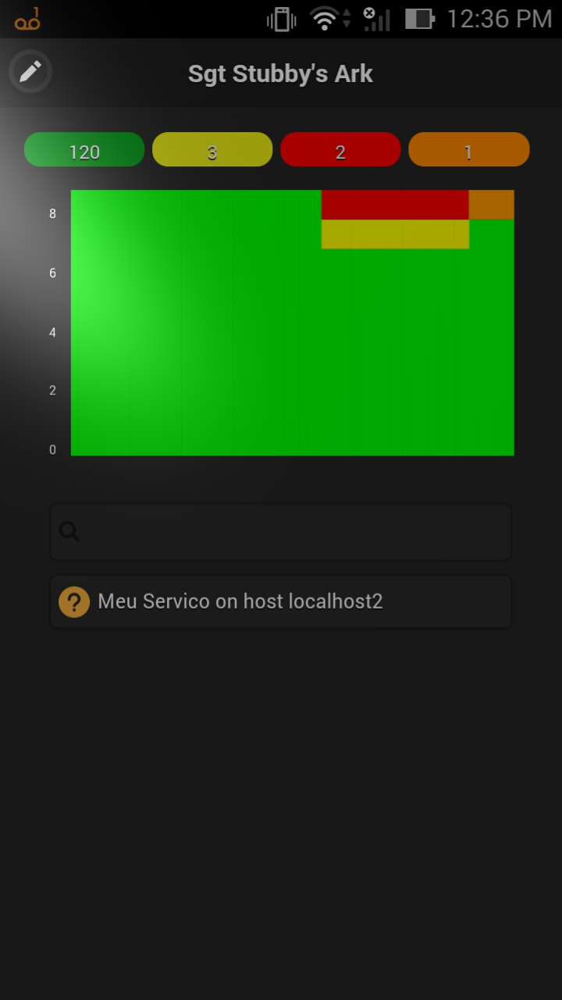
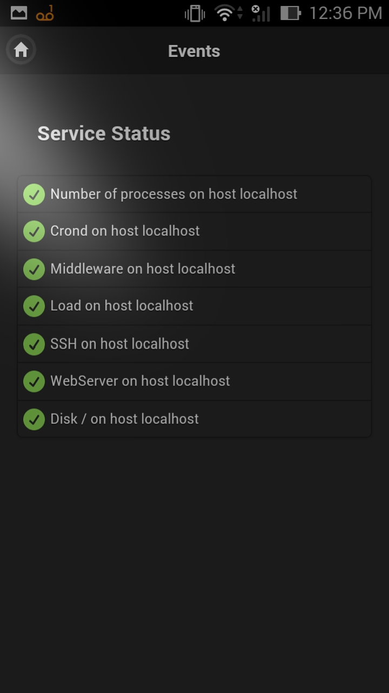
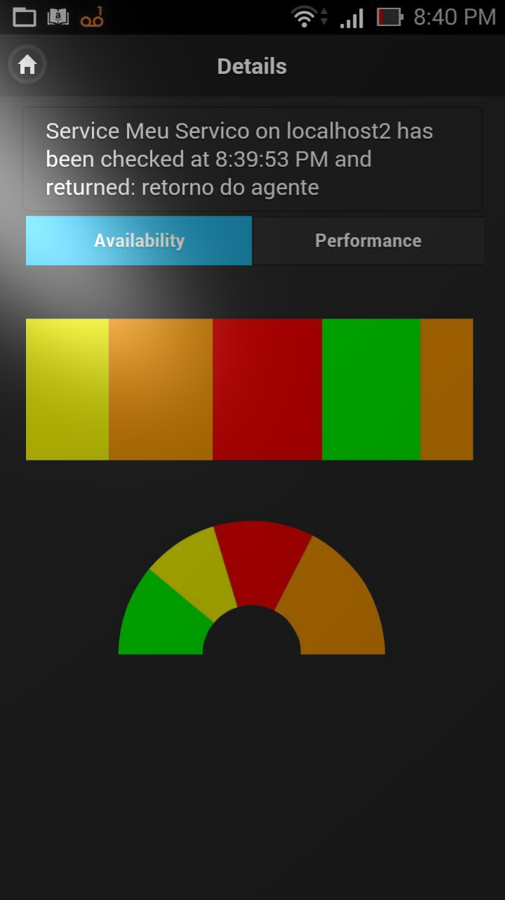
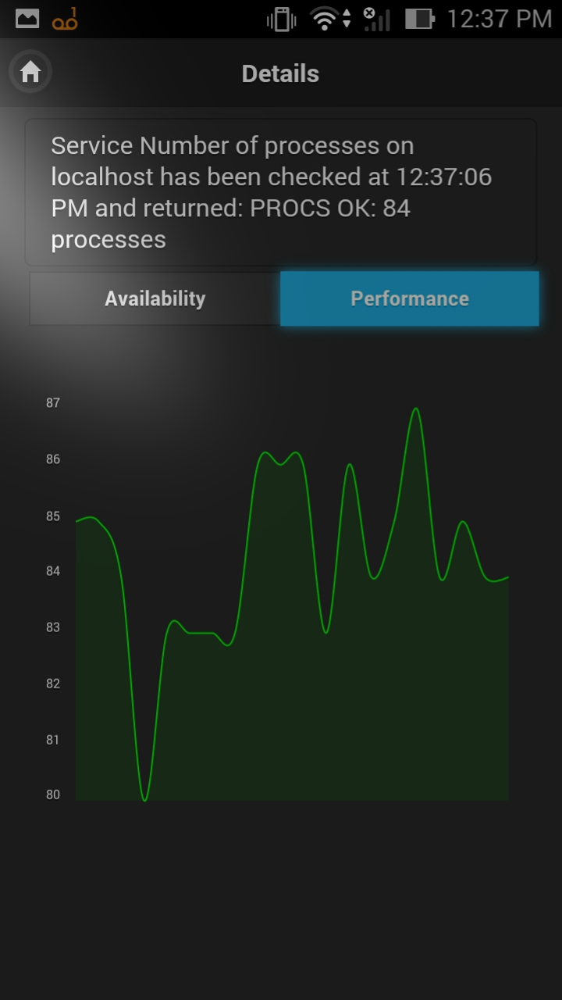

Don't do the problems always get to you? Let's antecipate to that
On the main screen you may see all problems pending on your network, it allows you to filter by any string with a simple text input field
You may also view all states for a specific server. States on all screens are updated automatically, so if some problem happens all interfaces are updated atomatically, no need for refresh
Clicking on an event you may see the availability for the element that generated the event.
Still on the event detail screen you may also see the performance for the element that generated the alert
